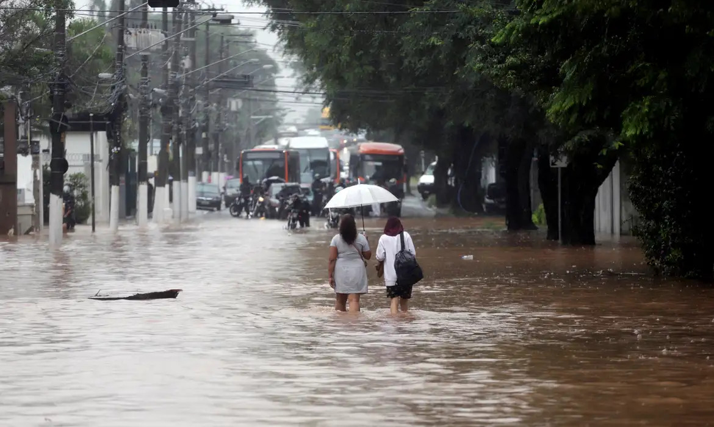
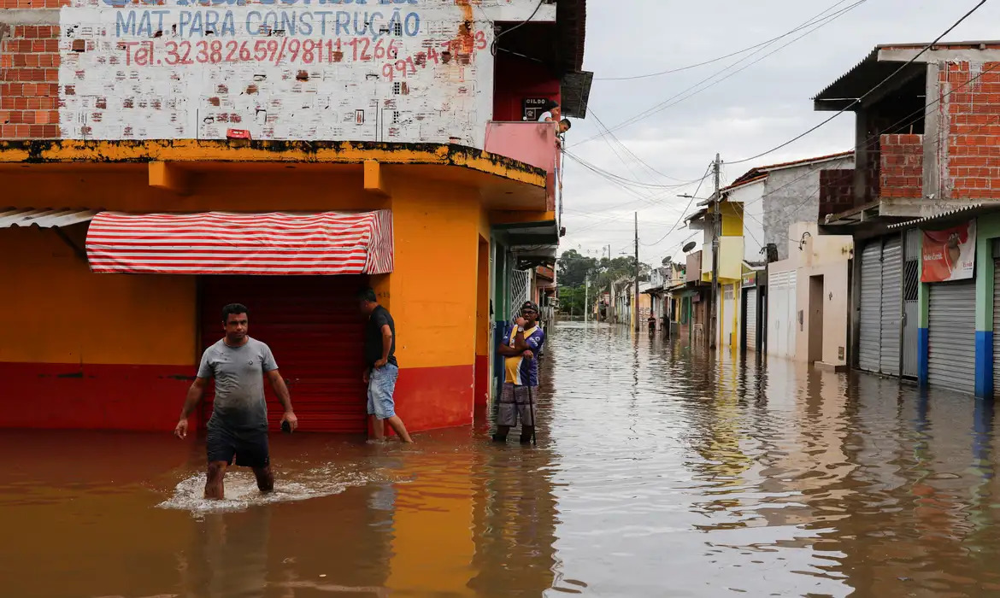
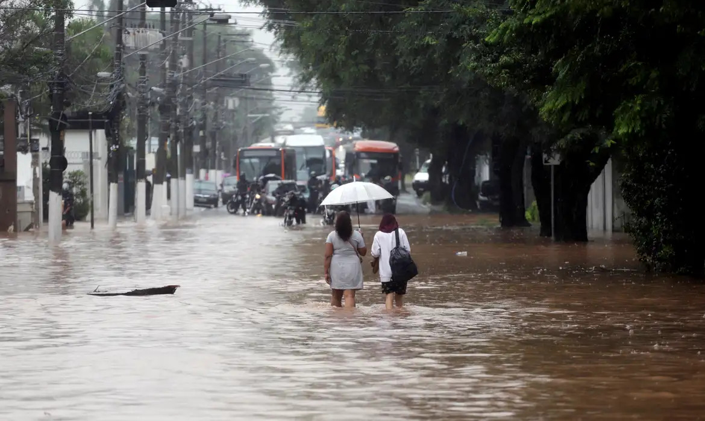
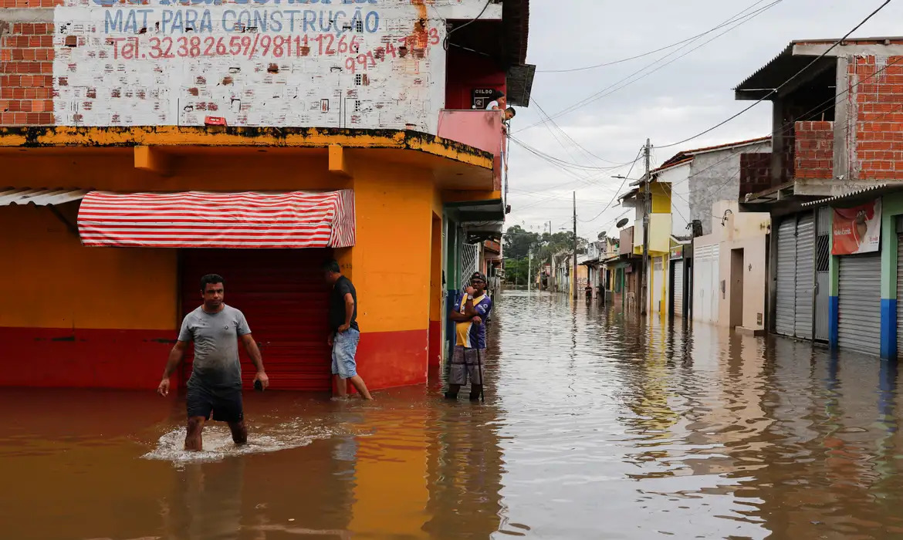

O Problema das Enchentes
Populações em áreas de risco sofrem com a falta de alertas antecipados, dificultando respostas coordenadas e aumentando a insegurança.
A falta de informação em tempo real durante enchentes dificulta decisões rápidas, aumenta riscos e expõe comunidades a maiores vulnerabilidades.
 


